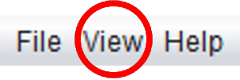
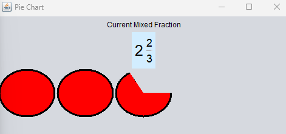
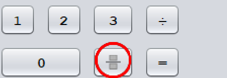
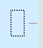
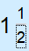
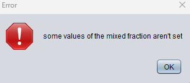
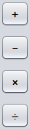
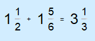

In der Kopfzeile von Fragile sehen Sie drei verschiedene Dropdown-Menüs, aus denen Sie wählen können. Das erste von ihnen ist die Datei Dropdown-Menü. Durch Scrollen über die Datei Dropdown-Menü, wird Ihnen ein Ausfahrt taste. Mit dieser Schaltfläche wird das Programm geschlossen. Eine alternative Möglichkeit zum Schließen Fragile ist durch einfaches Schließen des Fenster oben rechts im Rahmen schließen.
Durch Schweben über die Siehe Dropdown-Menü. Sie sehen dann die Kreisdiagramm Schaltfläche. Diese Schaltfläche wird können Sie das Ergebnis Ihrer Berechnung eines gemischten Bruchs in Form eines Tortendiagramms anzeigen. Dabei werden Ihre ganzen Zahlen als volle Kreise und Ihr potenzieller Restbruch als Prozentsatz des Kreisdiagramms dargestellt.
Here we have the main interface for the mixed fraction calculator. Like most calculators it features a numberpad made up of soft buttons, mathmatical operations and an "=" button. This calculator also features and additional button located on the bottom row. This is the Fraction / Focus change button.
Since this is a mixed fracton calculator we need a way to create these fractions. The way Fragile achives this is by allowing the user to change the focus on what number in the fraction they want to modify. As indicated by the rectangle in the viewing frame shown below.
Pressing the fraction button will move the rectangle to the numerator then the denominator then back to whole number position. Allowing the user to modify any given number as many times before deciding to perform a calculation.
To get started with performing a calculation, you must input the first mixed fraction you would like to be performed on. To achieve this, fill out the numerator and denominator using the focus feature mentioned previously.
This is an example of a valid input. If an invalid input is provided the user will be greeted with this error message.
Once a valid input is provided. Choose the mathmatical operation to be performed.
After the mathmatical operation has been selected. Input the second mixed fraction to be performed on. Repeat the first step of this process. After the second fraction has been input. Proceed to press the "=" button to evaluate the expression. The resulting expression will be presented as the image below.
